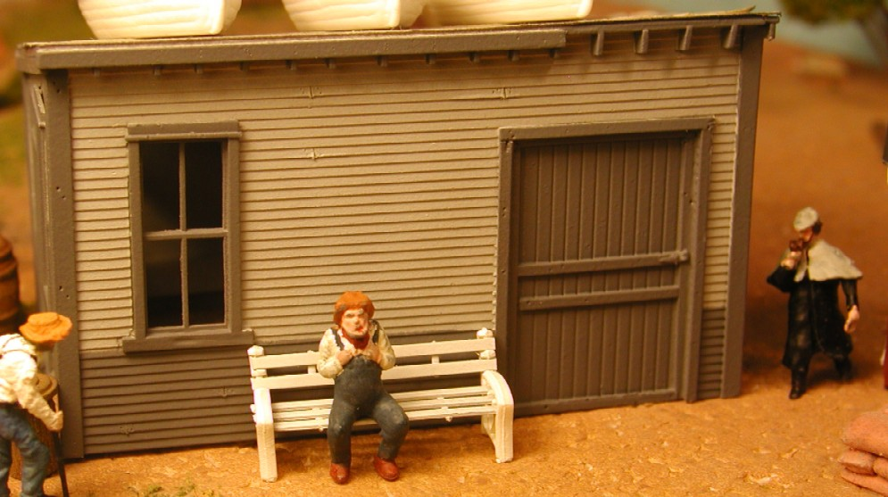

more before paint
needs paint
South side before paint
Masking

Inspection problems
Mr Stevens hobbles over to sit with the waiting Mr Brown until the Building Inspector gets done with his Gripe sheet.
Big South wall with Police oversight
Geary family buys off on the building and puts little Raymond into his own business